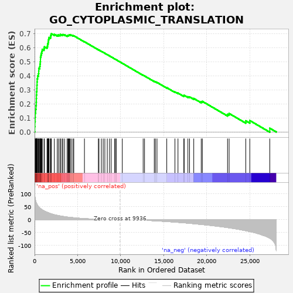
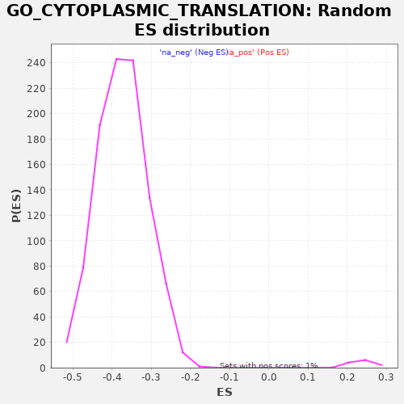

| | | Dataset | PRAD |
| Phenotype | NoPhenotypeAvailable |
| Upregulated in class | na_pos |
| GeneSet | GO_CYTOPLASMIC_TRANSLATION |
| Enrichment Score (ES) | 0.7009304 |
| Normalized Enrichment Score (NES) | 2.9097123 |
| Nominal p-value | 0.0 |
| FDR q-value | 0.0 |
| FWER p-Value | 0.0 |
Table: GSEA Results Summary

Fig 1: Enrichment plot: GO_CYTOPLASMIC_TRANSLATION
Profile of the Running ES Score & Positions of GeneSet Members on the Rank Ordered List
| PROBE | GENE SYMBOL | GENE_TITLE | RANK IN GENE LIST | RANK METRIC SCORE | RUNNING ES | CORE ENRICHMENT | | 1 | EEF2 | | | 20 | 96.924 | 0.0378 | Yes |
| 2 | EIF3I | | | 36 | 88.955 | 0.0725 | Yes |
| 3 | RPL36 | | | 65 | 81.451 | 0.1039 | Yes |
| 4 | RPL39 | | | 81 | 78.684 | 0.1346 | Yes |
| 5 | RPL29 | | | 126 | 72.900 | 0.1619 | Yes |
| 6 | RPLP0P6 | | | 167 | 68.310 | 0.1876 | Yes |
| 7 | RPL36A | | | 197 | 65.045 | 0.2124 | Yes |
| 8 | RPL35A | | | 208 | 64.592 | 0.2377 | Yes |
| 9 | RPL8 | | | 216 | 63.979 | 0.2628 | Yes |
| 10 | RPLP0 | | | 236 | 62.845 | 0.2871 | Yes |
| 11 | RPL13A | | | 266 | 60.493 | 0.3100 | Yes |
| 12 | RPL24 | | | 274 | 59.799 | 0.3335 | Yes |
| 13 | RPL32 | | | 288 | 58.815 | 0.3564 | Yes |
| 14 | RPL19 | | | 304 | 57.642 | 0.3788 | Yes |
| 15 | RPL38 | | | 353 | 55.499 | 0.3991 | Yes |
| 16 | EIF3M | | | 450 | 50.588 | 0.4157 | Yes |
| 17 | RPL15 | | | 482 | 49.245 | 0.4342 | Yes |
| 18 | RPS21 | | | 488 | 49.045 | 0.4534 | Yes |
| 19 | RPL11 | | | 602 | 45.373 | 0.4674 | Yes |
| 20 | RPS29 | | | 632 | 44.391 | 0.4840 | Yes |
| 21 | RPL31 | | | 659 | 43.742 | 0.5004 | Yes |
| 22 | EIF3CL | | | 683 | 43.042 | 0.5167 | Yes |
| 23 | RBM4 | | | 685 | 43.026 | 0.5337 | Yes |
| 24 | RPL30 | | | 741 | 41.535 | 0.5483 | Yes |
| 25 | RPL18 | | | 790 | 40.059 | 0.5624 | Yes |
| 26 | RPLP1 | | | 853 | 38.636 | 0.5756 | Yes |
| 27 | RPL26L1 | | | 893 | 37.788 | 0.5892 | Yes |
| 28 | RPL18A | | | 1099 | 33.886 | 0.5953 | Yes |
| 29 | TMA7 | | | 1142 | 33.140 | 0.6070 | Yes |
| 30 | EIF3D | | | 1448 | 28.660 | 0.6074 | Yes |
| 31 | DRG1 | | | 1505 | 27.924 | 0.6165 | Yes |
| 32 | EIF3L | | | 1511 | 27.860 | 0.6274 | Yes |
| 33 | EIF3E | | | 1570 | 27.084 | 0.6361 | Yes |
| 34 | EIF4B | | | 1602 | 26.618 | 0.6455 | Yes |
| 35 | RPL26 | | | 1611 | 26.488 | 0.6558 | Yes |
| 36 | EIF4G1 | | | 1644 | 26.031 | 0.6649 | Yes |
| 37 | MCTS1 | | | 1686 | 25.457 | 0.6736 | Yes |
| 38 | EIF3C | | | 1849 | 23.358 | 0.6771 | Yes |
| 39 | EIF2S3 | | | 1859 | 23.307 | 0.6860 | Yes |
| 40 | DPH6 | | | 1908 | 22.745 | 0.6933 | Yes |
| 41 | RPL10A | | | 1945 | 22.442 | 0.7009 | Yes |
| 42 | DENR | | | 2295 | 19.016 | 0.6960 | No |
| 43 | EIF3K | | | 2636 | 16.498 | 0.6904 | No |
| 44 | EIF4EBP1 | | | 2780 | 15.558 | 0.6915 | No |
| 45 | RPS23 | | | 2957 | 14.304 | 0.6909 | No |
| 46 | EIF3H | | | 2998 | 14.061 | 0.6950 | No |
| 47 | RPS28 | | | 3188 | 12.979 | 0.6934 | No |
| 48 | DHX9 | | | 3295 | 12.363 | 0.6945 | No |
| 49 | DPH5 | | | 3488 | 11.338 | 0.6922 | No |
| 50 | RPS26 | | | 3788 | 9.983 | 0.6854 | No |
| 51 | GSPT1 | | | 3802 | 9.921 | 0.6889 | No |
| 52 | RPL17 | | | 3917 | 9.455 | 0.6886 | No |
| 53 | EIF3A | | | 3982 | 9.203 | 0.6900 | No |
| 54 | EIF3J | | | 4035 | 9.003 | 0.6917 | No |
| 55 | YTHDF2 | | | 4122 | 8.719 | 0.6921 | No |
| 56 | RPL9 | | | 4252 | 8.256 | 0.6907 | No |
| 57 | GSPT2 | | | 4448 | 7.616 | 0.6868 | No |
| 58 | EIF3B | | | 4557 | 7.249 | 0.6858 | No |
| 59 | EIF3F | | | 5794 | 3.959 | 0.6432 | No |
| 60 | EIF4H | | | 7413 | 1.517 | 0.5860 | No |
| 61 | EIF2D | | | 7479 | 1.451 | 0.5843 | No |
| 62 | AARS | | | 7761 | 1.171 | 0.5747 | No |
| 63 | ZC3H15 | | | 7975 | 0.983 | 0.5675 | No |
| 64 | HSPA14 | | | 8164 | 0.833 | 0.5611 | No |
| 65 | CPEB3 | | | 8448 | 0.629 | 0.5512 | No |
| 66 | RWDD1 | | | 8704 | 0.469 | 0.5423 | No |
| 67 | NCK1 | | | 8904 | 0.371 | 0.5353 | No |
| 68 | FTSJ1 | | | 9291 | 0.203 | 0.5216 | No |
| 69 | MTOR | | | 9415 | 0.162 | 0.5173 | No |
| 70 | DHX36 | | | 9479 | 0.137 | 0.5151 | No |
| 71 | EIF3G | | | 10190 | -0.087 | 0.4897 | No |
| 72 | ETF1 | | | 12615 | -2.374 | 0.4041 | No |
| 73 | RPL41 | | | 12775 | -2.587 | 0.3994 | No |
| 74 | CPEB4 | | | 13907 | -4.391 | 0.3608 | No |
| 75 | DPH2 | | | 14040 | -4.636 | 0.3579 | No |
| 76 | DPH3 | | | 14224 | -4.991 | 0.3533 | No |
| 77 | DRG2 | | | 15358 | -7.393 | 0.3158 | No |
| 78 | CPEB2 | | | 16309 | -9.575 | 0.2856 | No |
| 79 | JAKMIP1 | | | 16662 | -10.479 | 0.2772 | No |
| 80 | DNAJC24 | | | 17346 | -12.206 | 0.2576 | No |
| 81 | ZNF385A | | | 17377 | -12.306 | 0.2615 | No |
| 82 | EIF5 | | | 17815 | -13.652 | 0.2513 | No |
| 83 | RBM24 | | | 18005 | -14.253 | 0.2502 | No |
| 84 | METTL3 | | | 18494 | -15.703 | 0.2390 | No |
| 85 | FMR1 | | | 19362 | -18.614 | 0.2154 | No |
| 86 | YBX3 | | | 19496 | -19.024 | 0.2182 | No |
| 87 | DPH7 | | | 22419 | -30.588 | 0.1259 | No |
| 88 | DPH1 | | | 22603 | -31.504 | 0.1319 | No |
| 89 | UNK | | | 24538 | -42.780 | 0.0797 | No |
| 90 | TICRR | | | 25005 | -46.001 | 0.0813 | No |
| 91 | CPEB1 | | | 27327 | -71.428 | 0.0268 | No |
Table: GSEA details [plain text format]

Fig 2: GO_CYTOPLASMIC_TRANSLATION: Random ES distribution
Gene set null distribution of ES for GO_CYTOPLASMIC_TRANSLATION